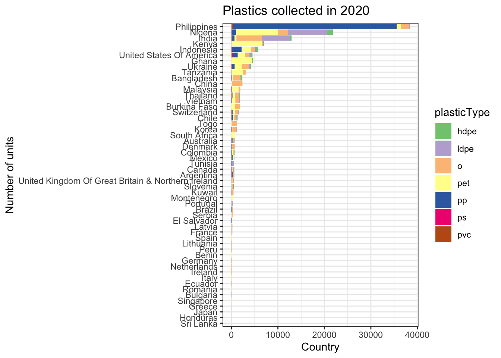

Last updated: 2021-02-16
Checks: 6 1
Knit directory: TidyTuesday/
This reproducible R Markdown analysis was created with workflowr (version 1.6.2). The Checks tab describes the reproducibility checks that were applied when the results were created. The Past versions tab lists the development history.
The R Markdown file has unstaged changes. To know which version of the R Markdown file created these results, you’ll want to first commit it to the Git repo. If you’re still working on the analysis, you can ignore this warning. When you’re finished, you can run wflow_publish to commit the R Markdown file and build the HTML.
Great job! The global environment was empty. Objects defined in the global environment can affect the analysis in your R Markdown file in unknown ways. For reproduciblity it’s best to always run the code in an empty environment.
The command set.seed(20210215) was run prior to running the code in the R Markdown file. Setting a seed ensures that any results that rely on randomness, e.g. subsampling or permutations, are reproducible.
Great job! Recording the operating system, R version, and package versions is critical for reproducibility.
Nice! There were no cached chunks for this analysis, so you can be confident that you successfully produced the results during this run.
Great job! Using relative paths to the files within your workflowr project makes it easier to run your code on other machines.
Great! You are using Git for version control. Tracking code development and connecting the code version to the results is critical for reproducibility.
The results in this page were generated with repository version 0bd9c6b. See the Past versions tab to see a history of the changes made to the R Markdown and HTML files.
Note that you need to be careful to ensure that all relevant files for the analysis have been committed to Git prior to generating the results (you can use wflow_publish or wflow_git_commit). workflowr only checks the R Markdown file, but you know if there are other scripts or data files that it depends on. Below is the status of the Git repository when the results were generated:
Ignored files:
Ignored: .Rproj.user/
Untracked files:
Untracked: packrat/
Unstaged changes:
Modified: analysis/Plastics.Rmd
Modified: analysis/_site.yml
Note that any generated files, e.g. HTML, png, CSS, etc., are not included in this status report because it is ok for generated content to have uncommitted changes.
These are the previous versions of the repository in which changes were made to the R Markdown (analysis/Plastics.Rmd) and HTML (docs/Plastics.html) files. If you’ve configured a remote Git repository (see ?wflow_git_remote), click on the hyperlinks in the table below to view the files as they were in that past version.
| File | Version | Author | Date | Message |
|---|---|---|---|---|
| Rmd | 0bd9c6b | Nhi Hin | 2021-02-15 | . |
The read.me with instructions, notes, data and data-dictionary is here.
plastics <- readr::read_csv('https://raw.githubusercontent.com/rfordatascience/tidytuesday/master/data/2021/2021-01-26/plastics.csv')clean_plastics <- plastics %>%
dplyr::mutate(parent_company = str_to_title(parent_company),
country = str_to_title(country)) %>%
dplyr::filter(!parent_company %in% c("#Error!", "Unbranded", "null",
"NULL","Null", "Grand Total"),
!country %in% c("EMPTY"))clean_plastics2<- clean_plastics %>%
split(x = ., f=.$country) %>%
lapply(function(x){
x %>% dplyr::arrange(parent_company, desc(grand_total)) %>%
dplyr::distinct(country, year, parent_company, num_events, volunteers, .keep_all=TRUE)
}) %>% bind_rows()# Get the columns associated with plastics collected
# and replace NA with 0
clean_plastics3 <- clean_plastics2[, c(4:12)]
clean_plastics3[is.na(clean_plastics3)] <- 0
clean_plastics2[, c(4:12)] <- clean_plastics3countries_by_year <- clean_plastics2 %>%
dplyr::group_by(country, year) %>%
dplyr::summarise(n = n()) %>%
dplyr::arrange(country, year)`summarise()` regrouping output by 'country' (override with `.groups` argument)# 50 countries participated in 2019
countries_2019 <- countries_by_year %>%
dplyr::filter(year == 2019) %>%
as_tibble
countries_2019# A tibble: 51 x 3
country year n
<chr> <dbl> <int>
1 Argentina 2019 251
2 Australia 2019 1
3 Bangladesh 2019 24
4 Benin 2019 1
5 Bhutan 2019 4
6 Brazil 2019 132
7 Bulgaria 2019 35
8 Burkina Faso 2019 26
9 Cameroon 2019 150
10 Canada 2019 24
# … with 41 more rows# 55 countries participated in 2020
countries_2020 <- countries_by_year %>%
dplyr::filter(year == 2020) %>%
as_tibble
countries_2020# A tibble: 53 x 3
country year n
<chr> <dbl> <int>
1 Argentina 2020 224
2 Australia 2020 67
3 Bangladesh 2020 141
4 Benin 2020 1
5 Brazil 2020 20
6 Bulgaria 2020 13
7 Burkina Faso 2020 13
8 Canada 2020 41
9 Chile 2020 119
10 China 2020 216
# … with 43 more rows# 38 countries participated in both years
inner_join(countries_2019,
countries_2020,
by = c("country")) %>%
as_tibble()# A tibble: 39 x 5
country year.x n.x year.y n.y
<chr> <dbl> <int> <dbl> <int>
1 Argentina 2019 251 2020 224
2 Australia 2019 1 2020 67
3 Bangladesh 2019 24 2020 141
4 Benin 2019 1 2020 1
5 Brazil 2019 132 2020 20
6 Bulgaria 2019 35 2020 13
7 Burkina Faso 2019 26 2020 13
8 Canada 2019 24 2020 41
9 China 2019 605 2020 216
10 Colombia 2019 1 2020 23
# … with 29 more rowscompanies_by_country_year <- clean_plastics2 %>%
dplyr::select(country, parent_company) %>%
dplyr::group_by(country) %>%
dplyr::summarise(n_companies = n()) %>%
dplyr::arrange(desc(n_companies))`summarise()` ungrouping output (override with `.groups` argument)companies_by_country_year # A tibble: 65 x 2
country n_companies
<chr> <int>
1 Empty 1267
2 United States Of America 945
3 Indonesia 874
4 Ukraine 825
5 China 821
6 Philippines 818
7 Vietnam 802
8 Nigeria 683
9 Hong Kong 556
10 India 552
# … with 55 more rowsgrandtotals <- clean_plastics2 %>%
dplyr::filter(year == 2020) %>%
dplyr::select(country, grand_total, volunteers) %>%
dplyr::group_by(country) %>%
dplyr::summarise(sum = sum(grand_total),
sum_volunteers = sum(volunteers)) %>%
dplyr::mutate(norm_total = sum/sum_volunteers)`summarise()` ungrouping output (override with `.groups` argument)clean_plastics2 %>%
dplyr::filter(year == 2020) %>%
dplyr::select(country, parent_company, hdpe, ldpe, o, pet, pp, ps, pvc) %>%
melt(measure.vars= c("hdpe", "ldpe", "o", "pet", "pp", "ps", "pvc")) %>%
dplyr::rename(plasticType = variable) %>%
dplyr::left_join(grandtotals, by = "country") %>%
ggplot(aes(x = reorder(country, sum), y = value, fill = plasticType)) +
geom_bar(stat="identity") +
coord_flip() +
scale_fill_brewer(palette="Accent") +
labs(x = "Number of units", y = "Country")+
ggtitle("Plastics collected in 2020")
grandtotals <- clean_plastics2 %>%
dplyr::filter(year == 2019) %>%
dplyr::select(country, grand_total) %>%
dplyr::group_by(country) %>%
dplyr::summarise(sum = sum(grand_total))`summarise()` ungrouping output (override with `.groups` argument)clean_plastics2 %>%
dplyr::filter(year == 2019) %>%
dplyr::select(country, parent_company, hdpe, ldpe, o, pet, pp, ps, pvc) %>%
melt(measure.vars= c("hdpe", "ldpe", "o", "pet", "pp", "ps", "pvc")) %>%
dplyr::rename(plasticType = variable) %>%
dplyr::left_join(grandtotals, by = "country") %>%
ggplot(aes(x = reorder(country, sum), y = value, fill = plasticType)) +
geom_bar(stat="identity") +
coord_flip() +
scale_fill_brewer(palette="Accent") +
labs(x = "Number of units", y = "Country") +
ggtitle("Plastics collected in 2019")
sessionInfo()R version 4.0.3 (2020-10-10)
Platform: x86_64-apple-darwin17.0 (64-bit)
Running under: macOS Mojave 10.14.6
Matrix products: default
BLAS: /Library/Frameworks/R.framework/Versions/4.0/Resources/lib/libRblas.dylib
LAPACK: /Library/Frameworks/R.framework/Versions/4.0/Resources/lib/libRlapack.dylib
locale:
[1] en_AU.UTF-8/en_AU.UTF-8/en_AU.UTF-8/C/en_AU.UTF-8/en_AU.UTF-8
attached base packages:
[1] stats graphics grDevices utils datasets methods base
other attached packages:
[1] reshape2_1.4.4 dplyr_1.0.2 stringr_1.4.0 magrittr_2.0.1 ggalt_0.4.0
[6] ggplot2_3.3.2 readr_1.4.0
loaded via a namespace (and not attached):
[1] tidyselect_1.1.0 xfun_0.19 purrr_0.3.4 colorspace_2.0-0
[5] vctrs_0.3.5 generics_0.1.0 htmltools_0.5.1.1 yaml_2.2.1
[9] utf8_1.1.4 rlang_0.4.9 later_1.1.0.1 pillar_1.4.7
[13] glue_1.4.2 withr_2.3.0 RColorBrewer_1.1-2 lifecycle_0.2.0
[17] plyr_1.8.6 munsell_0.5.0 gtable_0.3.0 workflowr_1.6.2
[21] evaluate_0.14 labeling_0.4.2 knitr_1.30 extrafont_0.17
[25] httpuv_1.5.4 curl_4.3 fansi_0.4.1 Rttf2pt1_1.3.8
[29] Rcpp_1.0.5 KernSmooth_2.23-17 promises_1.1.1 scales_1.1.1
[33] farver_2.0.3 fs_1.5.0 proj4_1.0-10 hms_0.5.3
[37] digest_0.6.27 stringi_1.5.3 ash_1.0-15 grid_4.0.3
[41] rprojroot_2.0.2 cli_2.2.0 tools_4.0.3 maps_3.3.0
[45] tibble_3.0.4 crayon_1.3.4 whisker_0.4 extrafontdb_1.0
[49] pkgconfig_2.0.3 ellipsis_0.3.1 MASS_7.3-53 assertthat_0.2.1
[53] rmarkdown_2.5 rstudioapi_0.13 R6_2.5.0 git2r_0.27.1
[57] compiler_4.0.3